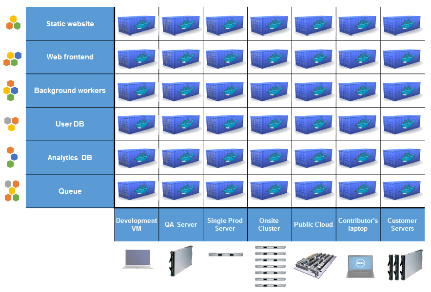

Docker
Hands-on session

About / Disclaimer
Workshop initially prepared internally at Adhese

Some pics borrowed from a presentation by John Lewis.
The Challenge

The Matrix from Hell

Cargo Transport Pre-1960

Also a Matrix from Hell

Solution: Intermodal Shipping Container

Docker is a Container System for Code

Matrix from Hell solved!

But... wait a second...
Virtual Machines do exactly the same!
Docker vs VM
No guest OS? How come?

Workshop
Image best practices
- stateless (need state -> volume)
- minimalistic (no unnecessary stuff)
- no SSHD "for debugging" (contraversive)
- one process per container (contraversive)